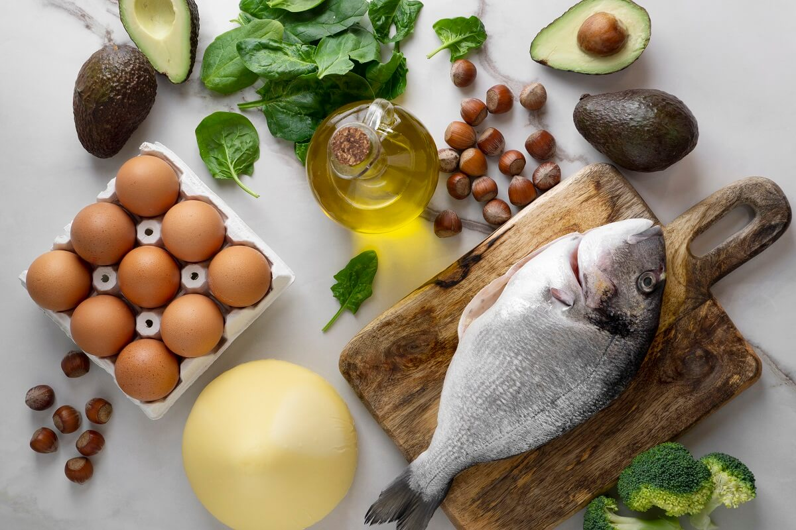

Жиры
Снижение общего потребления жиров до менее 30% от общей потребляемой энергии помогает предотвратить нездоровую прибавку веса у взрослых людей(1, 2, 3). Кроме того, риск развития НИЗ можно снизить благодаря:
- сокращению потребления насыщенных жиров до менее 10% от общей потребляемой энергии;
- сокращению потребления трансжиров до менее 1% от общей потребляемой энергии; и
- замещению насыщенных жиров и трансжиров ненасыщенными жирами, в частности полиненасыщенными жирами.
Потребление жиров, особенно насыщенных жиров и трансжиров промышленного производства, можно сократить следующими путями:
- готовить пищу на пару или варить, а не жарить и не запекать;
- заменять сливочное масло, свиное сало и ги на растительные масла, богатые полиненасыщенными жирами, такие как соевое, каноловое (рапсовое), кукурузное, сафлоровое и подсолнечное масло;
- употреблять в пищу молочную продукцию со сниженным содержанием жиров и постное мясо или обрезать видимый жир с мяса; и
- ограничивать потребление запеченных и жареных продуктов, а также заранее приготовленных закусочных и других продуктов (например, пончиков, кексов, пирогов, печенья и вафель), содержащих трансжиры промышленного производства.
